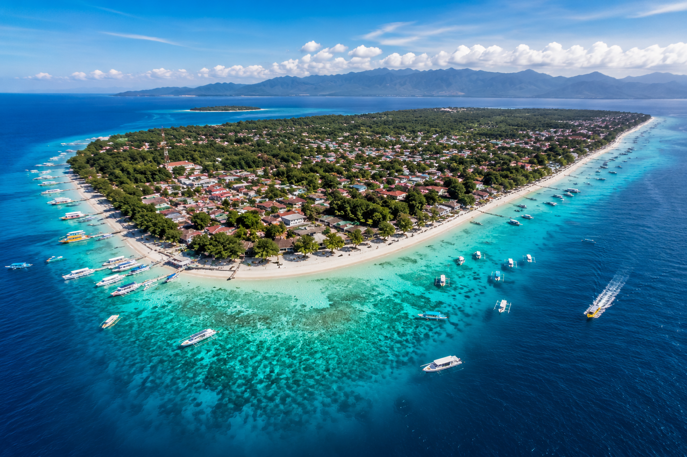
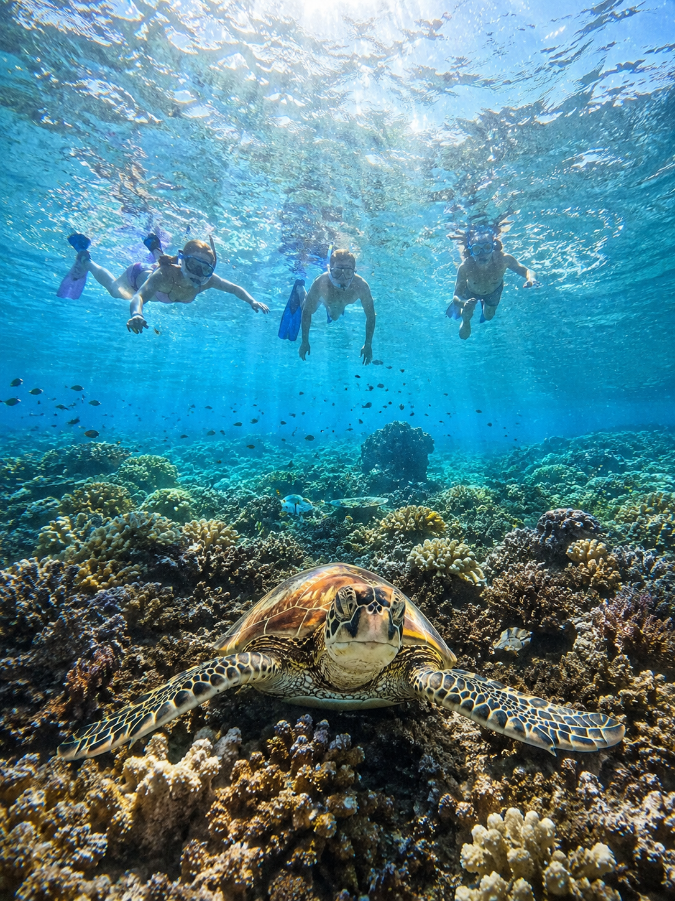
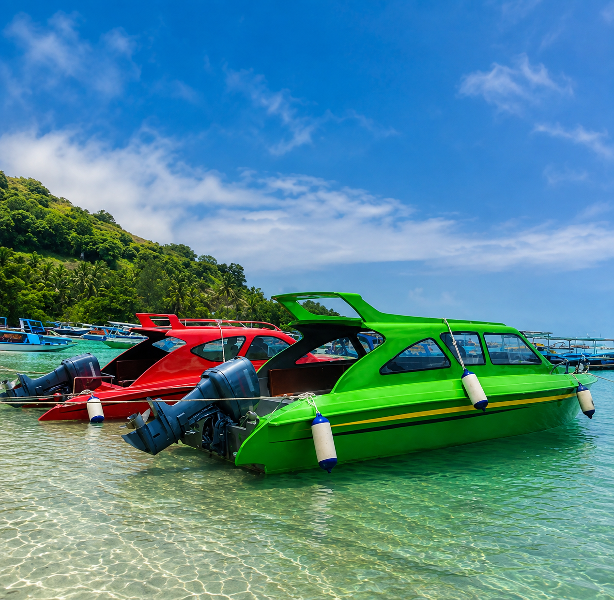

SNORKELING
Nikmati perairan jernih sambil mencari penyu, ikan tropis dan menikmati keindahan terumbu karang.

01 • PULAU GILI
Hidup • Petualangan • Sunset • Kehidupan Malam
Pulau paling hidup di antara tiga Gili, cocok untuk kamu yang ingin menikmati snorkeling, sunset, aktivitas laut, kuliner, dan suasana malam dalam satu perjalanan.
TENTANG PULAU
Gili Trawangan menawarkan perpaduan laut tropis, aktivitas seru, sunset, kuliner, dan suasana malam yang membuat setiap hari terasa berbeda.
Gili Trawangan terkenal dengan perairan jernih, terumbu karang dan kehidupan pulau yang lebih ramai. Kamu dapat menikmati pantai, berbagai aktivitas laut, tempat makan, hingga suasana malam yang lebih hidup.
Untuk pecinta laut, pengalaman populer meliputi snorkeling, diving, glass-bottom boat dan island hopping. Area perairannya juga menarik untuk melihat penyu, ikan tropis dan kehidupan bawah laut.
Karena tidak menggunakan kendaraan bermotor, pulau ini cocok dijelajahi dengan sepeda, berjalan kaki atau cidomo. Sisi timur cocok untuk menikmati suasana pagi dan sunrise, sementara sisi barat menjadi pilihan populer untuk sunset.
YANG BISA ANDA LAKUKAN
Pilih pengalaman yang paling sesuai dengan gaya liburanmu, dari aktivitas laut hingga menikmati suasana pulau saat matahari terbenam.
Nikmati perairan jernih sambil mencari penyu, ikan tropis dan menikmati keindahan terumbu karang.
Pilihan bagi kamu yang ingin menjelajahi dunia bawah laut Gili lebih dalam dengan pengalaman diving.
Nikmati golden hour di sisi barat pulau dengan pemandangan laut dan langit yang berubah warna.
Keliling pulau dengan sepeda, berjalan kaki atau cidomo sambil menikmati suasana lokal.
Coba berbagai aktivitas air seperti kayak, paddle board dan pengalaman laut lainnya.
Nikmati pilihan restoran, beach bar dan suasana malam yang membuat Gili Trawangan terasa lebih hidup.

Gabungkan snorkeling dengan private boat experience untuk menikmati laut Gili dengan lebih nyaman dan fleksibel.
Tutup perjalanan dengan sunset dan nikmati suasana tenang sebelum malam dimulai.
TEMPAT & PENGALAMAN
Setiap sisi Gili Trawangan menawarkan pengalaman berbeda. Berikut beberapa hal yang bisa menjadi bagian dari perjalananmu.
Nikmati perairan Gili Trawangan dengan kesempatan melihat penyu, ikan tropis dan terumbu karang dalam pengalaman snorkeling.
Sisi barat pulau menjadi pilihan menarik untuk menikmati sunset dan golden hour sebagai penutup private trip.

Bila ingin melihat lebih banyak, perjalanan dapat dikombinasikan dengan Gili Meno dan Gili Air.
TEMPAT MENGINAP
Kami tampilkan beberapa contoh akomodasi untuk membantu memberikan gambaran pilihan stay di Gili Trawangan. Pilihan dapat disesuaikan dengan tanggal, jumlah tamu dan budget.
Pilihan untuk tamu yang menginginkan sisi Gili Trawangan yang lebih tenang dengan suasana private beach dan pengalaman menginap yang lebih eksklusif.
Resort beachfront yang cocok untuk tamu yang menginginkan suasana romantis, akses ke laut dan pemandangan sunset.
Pilihan boutique adults-only dengan suasana pantai, pool dan karakter yang lebih playful untuk pasangan atau tamu yang mencari pengalaman berbeda.
COCOK UNTUK SIAPA?
CONTOH PERJALANAN
Ini hanya contoh alur perjalanan. Karena layanan private dibuat fleksibel, waktu dan aktivitas dapat disesuaikan dengan kebutuhan tamu.
KONEKSI PRIVATE BOAT
Kalau kamu memilih Gili Trawangan, perjalanan dapat dibuat private dan fleksibel. Tentukan tanggal, jumlah orang, waktu berangkat dan aktivitas yang diinginkan — kami bantu menyusun pengalaman yang sesuai.
SIAP MENJELAJAHI?
Beri tahu tanggal perjalanan, jumlah tamu dan pengalaman yang kamu inginkan. Kami akan membantu menyiapkannya.
CHAT VIA WHATSAPP